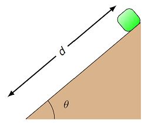

19. Work and energy¶
19.1. Overview¶
In physics, one of the most powerful methods used to understand a situation is the use of conservation methods. Remember that these are cases where we can say some physical quantity for a system stays the same, regardless of any kind of interactions between components of the system. Knowing that something remains constant, even when you do not know all the details of what is happening to the system, allows you to find out a lot about the system’s evolution. We have seen two conservation laws already – the conservation of linear momentum (when there is no net external force), and the conservation of angular momentum (no external torque). This lesson and the next are now working towards the third: the conservation of mechanical energy. In particular, here I set the stage for energy by defining work and kinetic energy; Lesson 20 will define potential energy and mechanical energy.
This is a good time to take stock of what we have covered to this point in the class as a whole, and what is coming up next. At this point, we have discussed forces and momentum (both linear and angular). The idea of a force is inituitively obvious – you probably have a sense of it as a “push” or a “pull”. Newton’s second law then built a bridge between forces and momentum, with net forces acting on an object changing the momentum of that object. We wrote down a mathematical definition of momentum, but the tie-in with Newton’s laws gives us an notion of momentum as a measure of the object’s inertia, its tendency to remain at a constant velocity unless acted on by outside forces. Using forces allows us to find the acceleration of an object, and the kinematic equations then give the complete motion of the object over a given time period.
Unlike forces and momentum, the idea of energy is not as intuitive. I can feel the force of the wall as I lean against it; I do not “see” the force of gravity, but I can see its effect on anything I let go of; friction and air resistance are so familiar that we automatically expect objects to slow down to a stop, and we may quietly think that inertia doesn’t quite make sense! However, I can’t see how the energy of a dropped object changes as it falls, or that of a car braking to a stop. So what is energy?
The picture I have in my head when I think of energy is that of accounting and money. If there is something I want, there are three ways that I can get it.
I can barter with you, i.e. trade you another physical object that you want.
I can give you something, like gold or silver coins, which everyone has decided is a “store of value”. In other words, we usually do not need the coins themselves, but they are a representation of a certain utility to the person who currently has them.
I can use my credit card to buy the item. When I use the card, my bank will decrease the size of a particular number on its computer, and your bank will increase the size of another number on its computer.
To me, energy is this last sense of money – in physics, we can attach certain numbers to objects, and these numbers change based on the motion of the object. By themselves, these numbers may be abstract, but as we will see, physicists have chosen the numbers well. Increasing or decreasing these numbers will represent physical processes, much like changing the number for my credit card buys my weekly groceries! So yes, energy is not something I can “put a finger on”, but it is tied to motions that I can observe. We will see that energy methods are very powerful, and are useful in a variety of situations.
Here are the objectives for this lesson:
Define work.
Describe the meaning of the sign for the work done by a given force.
Calculate the work for a force that varies with time.
State Hooke’s law for a spring.
Define kinetic energy.
State the work-energy theorem.
Identify the type of collision using kinetic energy.
19.2. Work¶
19.2.1. Definition of work¶
To get a start into energy methods, it is usual to begin with the notion of work. Unfortunately, this is a word that we use in everyday language to mean many things, but in physics, it has a very particular definition, given below, so it is very important to make sure you use the term properly.
Intuitive idea behind work
Work transfers energy either into (\(W > 0\)) or out of (\(W < 0\)) a system.
At this point, this may seem a bit circular, since we have not defined “energy” yet, but as we will see next, the mathematical definition of work includes forces acting over a distance. For now, think of it using our credit card analogy from above – work is like using the card to buy something, and changes numbers in our “energy” bank accounts that we will define later. Positive work will increase the energy of the system, while negative work will decrease the system’s energy.
Force and object motion |
Type of work |
|---|---|
Component in same direction |
positive |
Perpendicular |
zero |
Component in opp. direction |
negative |
We can put this intuitive into the form of a formula using the scalar product. This is given below.
Quantity: work
Symbol: \(W_F\)
Definition: The work \(W_F\) done by a force \({\vec F}\) on an object moving over a displacement \(\Delta {\vec r}\) is given by
Units: joules (J) = N \(\cdot\) m
Compare this to impulse \({\vec I} = \Delta {\vec p}\), which was a force \({\vec F}\) acting over a time \(\Delta t\). Now we are looking at the action of a force on an object, as the object moves over a displacement \(\Delta {\vec r}\). The reason for defining impulse was its application with Newton’s second law of motion; by the end of this lesson, you will see how the work defined here ties into a particular form of energy.
How do we get back to our intuition about positive, negative, and zero work? Remember when we talked about the scalar product in Lesson 09, that for two vectors \({\vec A}\) and \({\vec B}\), the scalar \({\vec A} \cdot {\vec B} = AB \cos \theta\). Here, \(A\) and \(B\) are the magnitudes of the two vectors, and \(\theta\) is the angle between them. Thus, the sign of \({\vec A} \cdot {\vec B}\) depends only on this angle \(\theta\). The idea is the same for the work \(W_F\) done by a force \({\vec F}\); we can similarly use the form
With this intuition, then the sign of the work is determined by whether the angle \(\theta_F\) between the force and displacement vectors, \({\vec F}\) and \(\Delta {\vec r}\) is acute, obtuse, or if the vectors are perpendicular. When \(\theta_F < 90.0^\circ\), then \(\cos \theta_F > 0\) and the work is positive; the two vectors tend to point in the same direction. On the other hand, when \(\theta_F > 90.0^\circ\), the vectors \({\vec F}\) and \(\Delta {\vec r}\) are pointing in opposite directions, more or less, and the work is negative, since \(\cos \theta_F < 0\). Finally, \(\theta_F = 90.0^\circ\), the force and displacement vectors are perpendicular, and the work is zero, because \(\cos 90.0^\circ = 0\). This is summarized in the table below.
Force and object motion |
Scalar product relation |
Type of work |
|---|---|---|
Component in same direction |
\({\vec F} \cdot \Delta {\vec r} > 0\) |
positive |
Perpendicular |
\({\vec F} \cdot \Delta {\vec r} = 0\) |
zero |
Component in opp. direction |
\({\vec F} \cdot \Delta {\vec r} < 0\) |
negative |
Problem
An ice block is floating on a river. The water pushes on the block with a force of \(\vec{F}\) = (200 N)\({\hat x}\) + (170 N)\({\hat y}\). While that force is acting, the block displaces by \(\Delta {\vec r}\) = (17.0 m)\({\hat x}\) + (-16.0 m)\({\hat y}\). Which choice below is the work done by the water on the block?
\(-310.\) J
\(+0.00\) J
\(+30.0\) J
\(+680.\) J
\(+6.12\) kJ
Answer: \(+680.\) J
Problem
Suppose you throw a ball straight upward. As the ball moves from sitting at rest in your hand to its maximum height, what is the sign (positive, negative, zero) of the works done by the following forces:
The force you exert on the ball throwing it upward
The force of gravity
The force of air resistance
As the ball passes through its highest point and starts falling downward, what is the sign of the force of gravity? Of air resistance?
Answers: While the ball is in your hand, you are exerting a force in the direction of its upward motion at that time; thus, your applied force is doing a positive work. On the other hand, as the ball moves upward, the forces of gravity and air resistance both point downward, so they do negative work.
When the ball moves from its maximum height down to the ground, the force of gravity is in the same direction as the motion, so gravity does positive work. However, the force of air resistance has now switched directions, and is pointing upward, opposite to the direction of motion. So again, air resistance does negative work.
If there are multiple forces acting on an object, we can find the work done by each of these individually. Then the net work \(W_{net}\) done on the object can be found in two different ways. Suppose there are forces \({\vec F}_1, {\vec F}_2, \dots, {\vec F}_k\), acting on the object; we will denote these as forces \({\vec F}_i\) for labels \(i = \{1, 2, \cdots, k\}\). Then both of the following are true, if the object moves through a displacement \(\Delta {\vec r}\). First, find the work \(W_{F_i}\) done by each of the individual forces \({\vec F}_i\). The net work is then the sum of these individual works.
The net work can also be found by finding the net force \({\vec F}_{net} = \sum_i {\vec F}_i\) acting on the object. The net work is then the work done by this net force.
Using Newton’s second law, this can also be written as
19.2.2. An example: pushing a crate¶
Let’s now go through an example problem; you may notice this problem is similar to an example we did in Lesson 12. Suppose a 32.0 kg crate is pushed across a rough horizontal floor a distance of 10.0 m. The coefficient of kinetic friction between the crate and the floor is 0.200. The person pushes on the crate with a force with a magnitude of 90.0 N, at an angle of 22.0\(^\circ\) below the horizontal. The crate accelerates to the right with a value of 46.2 cm/s\(^2\). We will determine the work done (in J) by each of the forces acting on the crate, then find the net work done by these forces.
First, before we do anything, we draw an FBD for the system. Notice that I have added the displacement vector \(\Delta {\vec r}\) as a dashed arrow. This will be helpful to find the work, since we can use it to find the angle between each force and the displacement.
Since we know (or can calculate) the magnitudes of each force vector, it makes more sense to use the magnitude-angle form of the work done by each force. Thus, it helps to find the angle \(\theta_F\) between each force vector and the displacement vector. This is why drawing \(\Delta {\vec r}\) on the FBD is so helpful – we can basically read off all the angles. In particular, since the surface is flat, then the angles \(\theta_g\) and \(\theta_N\), for the gravitational and normal forces, respectively, are both zero. This leads immediately to their works \(W_g = W_N = 0\) J as well. We don’t even have to calculate the magnitudes of these forces!
However, it turns out we still need to find the magnitude of the normal force, in order to find the frictional force value. This is because the angle \(\theta_{fr} = 180.^\circ\) between the frictional force and the displacement. Writing down Newton’s 2nd law in the \(y\) direction, we have
where \(a_y = 0\) since there is no vertical acceleration. This gives the equation
and so the work done by the frictional force is
I want to pause here, and emphasize an important point. There are multiple angles involved in this problem, so you should give each of them a different name to avoid confusion. In particular, I have used a subscript to indicate which force each angle is associated with. I often see students make mistakes because they don’t do this!
Do not confuse numbers of the same type
Different numbers should have different symbols. If you have multiple angles (or other similar variables), give them descriptive names so you do not confuse them. Thus, \(\theta_1\) and \(\theta_2\) are not very helpful, but \(\theta_g\) and \(\theta_{fr}\) give a better idea of what they represent.
Now, \(\theta_{fr} = 180.^\circ\) while the angle \(\theta_{app} = 21.0^\circ\). Plugging in these numbers into the equation above gives \(W_{fr} = -692\) J; the work done by friction is negative, since the frictional force points opposite to the crate’s displacement.
For the final force \({\vec F}_{app}\), the work done is rather easy to find, since
This gives \(W_{app} = 840.\) J; the work is positive, since both the applied force points more or less in the same direction as the displacement.
Once we have these values, we can find the net work in two different ways, as spelled out above. The first is just to add up the answers we got for the individual works:
The other method, which gives the same answer, is to find the net force magnitude, using the value of \(a_x\) given with the other numbers above, so that
This also gives 148 J; having two methods is a great way to double check your results.
Problem
A block of mass 3.75 kg slides down a 40.0\(^\circ\) incline 5.00 m long as shown below. The coefficient of kinetic friction between the incline and block is 0.350.

What is the work done (in J) on the block by the force of gravity?
What is the work done (in J) on the block by the normal force?
What is the work done (in J) on the block by the kinetic friction force?
What is the total work (in J) done on the block?
If the block starts from rest at the top of the incline, what is the speed (in m/s) of the block at the bottom of the incline? Hint: Find acceleration and use kinematics!
Answers: 118 J; 0.00 J; -49.3 J; 68.7 J; 6.05 m/s
19.2.3. Graphing work done by gravity¶
Using vPython, we will now make a graph of the total work done by the gravitational force on an object near the Earth’s surface. Much of this we have already done before, the new part is finding the work done on the object. The program below includes code for an object ball dropped from rest from a height INIT_HEIGHT above the object ground. The code shows the animation of the ball, and also creates a graph of the total work done on ball as a function of its vertical position \(r_y\). The simulation stops when the ball hits the ground, since the while loop only runs when ball.pos.y > 0.
In the code, you will have to do two things before the code is able to run. First, define the two vectors GRAV_FIELD and NET_FORCE for an object moving near the surface of the Earth, with only the gravitational force acting on it. Then, inside the while loop, update the variable work to find the total work done on the ball due to the net force. Use the definition of work given above to find this. Remember that you can use dot() in vPython to find the scalar product of two vectors; you can see this in action in Lesson 09. In addition, the displacement \(\Delta {\vec r}\) is due to the velocity of the ball, so find this displacement over each time step DT using ball.momentum. How can you find the displacement of the ball over each time interval DT?
When you have completed these steps, run the code and see what kind of graph you obtain.
If you have correctly implemented the physics into the program, your graph should look something like the following. Since the gravitational force points downward, positive work is done on the ball by gravity as it falls. The further the ball falls, the larger this work \(W_g\). Notice that this fall process starts at \(r_y\) on the right side of the graph, and then moves to the graph’s left side, as \(r_y\) decreases.
Problem
Do you get a different \(W_g\) vs. \(r_y\) graph if the ball is given an initial velocity pointing straight downward? What if the initial velocity is pointing straight upwards?
Answer: Regardless of the initial velocity of the ball, the portion of the graph shown above will be exactly the same. The only difference you may see is if you give the ball an initial upward velocity; in that case, the graph may extend to higher \(r_y\), and have \(W_g < 0\) for those heights.
Problem
What does the graph of \(W_g\) vs. \(r_y\) look like if the ball travels in projection motion, i.e. it moves in both the horizontal and vertical directions? Change ball.velocity so it now has an initial \(x\) component, and see how the graph changes.
Answer: The graph will be the same as the graph shown above. The work done by gravity only depends on the change in vertical position.
Let’s see why the results of the previous two problems are true. Since the net force on the ball is a constant force \({\vec F}_g = m {\vec g}\), then the total work done on the ball is easy to find. Suppose that the ball starts at an initial position \({\vec r}_i\) and reaches the ground at a final position \({\vec r}_f\). Then the work done by gravity is
Remember that taking the scalar product of a vector with a unit vector gives the component along the direction of the unit vector; for example, \({\hat y} \cdot {\vec r}_f = r_{f, y}\). Thus, only the vertical motion of the object matters when finding the work done by gravity. Since the force of gravity only acts downward near the surface of the Earth, any horizontal motion of the object does not change \(W_g\). The velocity during its motion, or the time it takes to complete its trajectory, do not matter, either.
19.3. Work with a changing force¶
19.3.1. Generic variable forces¶
In one dimension (usually \(r_x\)), the work done by a force which is not constant (i.e., a varying force) can be found graphically by calculating the area under the curve of a force versus position graph. For increasing values of \(r_x\) (positive displacements), areas above the \(x\)-axis (\(F_x = 0\)) correspond to positive work, while those below the axis correspond to negative work.
Work for a variable force
Suppose an object moves in the positive direction along the \(x\) axis, with a force \({\vec F} = F_x {\hat x}\) acting on it. The work done on the object is the area under the curve on a \(F_x\) vs. \(r_x\) graph. The “\(x\)” in the previous two sentences can be replaced with any coordinate axis.
Problem
A box is dragged horizontally along a (rough) level floor. Calculate the work done (in J) on the object as it moves from 4.00 m to 12.0 m.
Answer: \(+6.00\) J
19.3.2. The spring force¶
Now we will look at the spring force \(F_{spr}\), and graph its work using vPython, similar to how we did it above for the gravitational force. The spring force vector \({\vec F}_{spr}\) acting on a mass due to a spring is given by Hooke’s law, which states
Here, \(k\) is known as the spring constant – the larger that \(k\) is, the stiffer the spring. The position \({\vec r}\) is the position of the mass acted on by the spring, while \({\vec r}_0\) is the equilibrium position of the spring. If the spring is at its equilibrium point, i.e. \({\vec r} = {\vec r}_0\), then the spring does not exert any force on the mass. However if the mass moves away from the equilibrium position, the spring will exert a non-zero force on the mass. Finally, the minus sign out in front tells you that the direction of the spring force is opposite to the displacement \({\vec r} - {\vec r}_0\) away from the equilibrium point. If you stretch a spring to the left, for example, the spring force will act towards the right. The spring always exerts a force that points from the mass towards the equilibrium position.
Problem
What would a graph of the spring force vs. displacement look like? What is the interpretation of the slope for this graph?
We will return to the questions asked in the problem above, and see what the answers are; you should try it on your own first! You can gain some intuition about the spring force by using the PhET app below. In particular, make sure you understand how the magnitude of the spring force depends on the distance the spring is stretched or compressed, and how the direction of the spring force depends on which way you have moved the spring from its equilibrium point.
Let’s now create a spring in vPython. To create a visual representation of the spring itself, we will use helix, which shows the helical spring between the origin and the mass on its end. Then, we create a ball on the end of the spring. Much like other shapes we have used before, a helix has some standard attributes, such as pos and axis. The pos sets the position of one side of the helix (not the center!), while axis gives the position of the other side of the helix relative to the position pos. Finally, the attribute radius sets the width of the helix’s coil, while thickness sets the size of the helix itself.
The program below does exactly what is described above: creates a red ball, with a helix extending from the coordinate origin \((0, 0, 0)\) to the ball. Note that placing the ball on the end of the spring is done by setting spring.axis = ball.pos. However, it is missing the pieces necessary for movement. So let’s put this spring into motion, using the spring force equation given at the beginning of this section. As currently given, the velocity of the ball does not change due to the spring. Thus you must add in the correct force in the line where ball.momentum is updated. Use the spring force equation above, along with the fact that the net force (given by the spring force) is
To update ball.momentum, you will need to use the net force on the mass, along with mass of the ball ball.mass and the spring’s force constant spring.constant. Thus, these need to be set to the proper values, in terms of the definitions of OBJ_MASS and SPRING_CONST given at the beginning of the program. If you do this correctly, the motion of the mass should be oscillatory, moving back and forth.
This oscillatory motion can be seen by making a graph of the horizontal position of the mass as a function of time. In the place indicated in the program above, create a graph posGraph and a curve posCurve using posGraph. For reference, you can look back at Lesson 03 to remind yourself how to do this. You should include labels xtitle = 't (s)' and ytitle = 'r_x (m)' for the graph axes. Inside the while loop, update posCurve using the time t and the horizontal position of the mass ball.pos.x. When you run the code, the graph should look like a cosine function.
Problem
What kind of motion do you get if the mass has a non-zero initial velocity? In particular, given the initial conditions in the program, what would the initial velocity of the mass have to be, in order to have the mass undergo uniform circular counterclockwise motion in the x-y plane?
Answer: In general, giving the mass a non-zero initial velocity gives rise to the mass moving along an elliptical orbit. To get {uniform circular motion](UCM), you can find the proper speed for the mass, by setting the magnitude of the spring force equation to the necessary centripetal force. Solving the algebraic equation
with spring constant \(k\), mass \(m\), distance \(r\) from the origin, and desired speed \(v\), this would give rise to the following vPython command
INIT_SPEED = SPRING_LEN * sqrt(SPRING_CONST / OBJ_MASS)
so that the proper definition of the initial velocity would be
ball.velocity = vector(0, INIT_SPEED, 0)
For the default values in the program, this gives a speed of 1.90 m/s.
19.3.3. Work done by the spring force¶
Hopefully you now have a decent understanding of the spring force. Next, we will graph the work done by this spring force as a function of position, much as we did for the force of gravity earlier. You will modify the program below to do this. However, unlike the gravitational force, we cannot just use \(\Delta W_{spr} = {\vec F}_{spr} \cdot \Delta {\vec r}\) since the spring force \({\vec F}_{spr}\) changes with position. So let’s make a graph of this force as a function of position, and algebrically find the work over a displacement as we did above for non-constant forces.
The spring force curve is a straight line with a negative slope; this is because the slope is just \(-k\), or the negative of the spring constant. There are two distances \(r_i\) and \(r_f\) marked on the graph, and their corresponding forces \(F_{spr} (r_i)\) and \(F_{spr} (r_f)\).
Problem
Using the symbols from the graph, along with the spring constant \(k\), write down an algebraic expression for the work done by the spring over the shaded region, between \(r_i\) and \(r_f\).
Answer: You can either use the equation for the area of a trapezoid, or break the area into a rectangle and a triangle, then add the individual areas. Either way, you get the work \(\Delta W\) done by the spring from \(r_i\) to \(r_f\) is
The shaded blue region is what we want – the area under the curve for a force vs. position graph gives the change in work due to the force. From the previous problem, you have an algebraic equation for this area, which you need to convert into vPython code to update the variable work. To help you out, remember the following points. In the program below, a line of code has been added to save the position of the ball at the start of each time step as the variable ball.oldpos. Thus, \(r_i\) is given by this variable. Similarly, the final position \(r_f\) is calculated when position and velocity are updated, so it is the variable ball.pos after this update.
Use the equation from the last problem, and write it into vPython, using the variables defined in the program. You will also need to write the code to graph work as a function of the position ball.pos.x. Once you have done this, run the program, and see what kind of graph you get.
Problem
The simulation above stops when the ball reaches its maximum distance to the left. What does the graph of \(W_{spr}\) vs. \(r_x\) look like if you increase MAX_TIME to include several oscillations?
Answer: The graph curve should overlap the line from previous oscillations. This may not be exact, due to numerical error. However, using a more sophisticated method would give the curve would repeat its previous iterations.
19.4. Kinetic energy and the work-energy theorem¶
Up to this point, we have a definition of work, and have seen various examples of how to calculate it. But we have not really proven that work is the flow of energy into or out of a system. In fact, we haven’t even defined energy yet! So let’s make up for that, by showing how work is related to a quantity describing the motion of a system.
Using Newton’s second law and the defintion of total work, we have
If we write out what the scalar product means on the right-hand side of this equation, we get (factoring out the common mass)
If you remember from when we discussed the kinematics equations in Lesson 06, we had three equations that had pieces that looked like this; these were
Thus, combining these equations and doing some algebra, the total work on the object can be written as
If we use the Pythagorean theorem in three dimensions, the final speed \(v_f\) of the object is given in terms of its components by
and the same can be done with the initial speed \(v_i\). Therefore, the total work can be written as
This equation is known as the work-energy theorem. For situations where there is an acceleration due to the net force, the total work done on the object is given by the change in this quantity \((1/2) mv^2\) over the displacement. This relates to the motion of the object – it features both mass \(m\) and speed \(v\) (not velocity!) – so we call it kinetic energy (remember “kinetic” means “motion”), and denote it by the symbol \(K\).
Quantity: kinetic energy
Symbol: \(K\)
Equation: With \(m\) the mass of the object, and \(v\) the object’s speed,
Note: \(K\) is a scalar quantity, and is always positive
Units: joules (J)
Thus, we have shown that when the only change in the system is its speed, net work results in a change in kinetic energy, depending on the relative direction between the net force and the displacement.
So we now have our first form of energy – kinetic energy is a number related to the motion of an object. In addition, the net work shows how this quantity changes. A positive net work increases the kinetic energy of the system, while a negative net work decreases it. When there is no net work, the kinetic energy remains the same. This is the reason I said at the beginning of this lesson that work is the flow of energy into or out of the system.
Problem
The collision of the Chicxulub asteroid with the Earth near the present-day Yucatan peninsula in Mexico is the current most accepted reason for the extinction event 65 Myr ago that killed off the dinosaurs. Assuming the asteroid is a sphere 29.8 km in diameter, with a mass of \(2.63 \times 10^{16}\) kg, and moving at about 20.0 km/s at impact, find the resulting release of kinetic energy in equivalent number of Hiroshima events. The Hiroshima nuclear bomb had a yield of about 13.0 kilotons of TNT, and one megaton of TNT is defined as \(4.20 \times 10^{15}\) J.
Answer: \(9.63 \times 10^{10}\) Hiroshimas
19.5. Revisiting collisions¶
Hopefully, you recall from Lesson 12 when we considered collisions between objects. In that lesson, we used the concept of the coefficient of restitution \(\epsilon\) to divide up collisions into elastic and inelastic collisions. Specifically, I defined the coefficient of restitution as the ratio of the final to initial relative speeds of two objects. If I call these objects 1 and 2, with initial velocities \({\vec v}_{1, i}, {\vec v}_{2, i}\), and final velocities \({\vec v}_{1, f}, {\vec v}_{2, f}\), then we have that
The advantange of this definition is that the difference between an elastic and an inelastic collision is more visible, particularly in the “springiness” of the collision. An elastic collision, with \(\epsilon = 1\), is one where the two objects leave the collision at the same relative speed as they enter it. If you were an ant on one of two colliding hockey pucks, from your vantage point, you would see the second puck enter and leave the collision with the same speed. On the other hand, an inelastic collision, with \(0 < \epsilon < 1\), has the ant see the final relative speed as less than the initial; the pucks do not bounce off of each other with the same “springiness” as they came into the collision. When \(\epsilon = 0\), the two objects stick together, so their final relative speed is just zero.
Although classifying collisions according to relative speeds is nice, it has the disadvantage that the calculation can be involved, especially when considering collisions in two dimensions. Notice that we are finding the difference in two velocity vectors (before and after the collision), then the magnitude of this difference. Coding this in vPython is not too bad, but doing it by pencil and paper can be lengthy. It would be nice to have another method to divide up collisions.
It turns out there is, in fact, another way to find out if a collision is elastic, using kinetic energy! Unfortunately, this does not map over cleanly to the coefficient of restitution, although that concept is in the background. The idea is to look at the change in the kinetic energy of the system as a whole. I will do this by looking at the final system kinetic energy of the system, as a fraction of the initial system kinetic energy. This can be expressed as the ratio
\(K_i\) and \(K_f\) are meant as the initial and final kinetic energies. To spell this out, suppose we have two colliding objects 1 and 2. Then the ratio would be
Now, if all of the kinetic energy is preserved after the collision, then this ratio is equal to one; the sum of kinetic energies is the same, before and afterwards. Thus, for an elastic collision,
This is just another way of saying that the final system kinetic energy is 100% of the initial. On the other hand, if kinetic energy is lost during the collision (and goes into other forms of energy, such as heat or sound), then the ratio is less than 1. Therefore, for an inelastic collision,
Note that the ratio is not necessarily zero for a completely inelastic collision, when the two objects stick together! They may still be moving, just with the smallest possible kinetic energy.
Let’s go back to the two-dimensional collision examples in Lesson 12, to see how this works. For the first problem, I will repeat the problem statement here, but you should go back to the original discussion to remind yourself of how we did it there. The drawing below shows a collision between two pucks on an air-hockey table. Puck A has a mass of 23.0 g and is moving along the \(x\) axis with a speed of 5.50 m/s. It makes a collision with puck B, which has a mass of 63.0 g and is initially at rest. The collision is not head-on. After the collision, the two pucks fly apart with the angles shown in the drawing. The final speed of puck A is 3.38 m/s.

When we worked out the problem previously, we found that the final speed of puck B was 1.858 m/s. If we use the kinetic energy ratio test above, we get
Thus, the final kinetic energy of the system is only 69.0% of the original system kinetic energy, and the collision is inelastic. We already knew the pucks’ speeds, before and after the collision, and the calculations only involve scalar kinetic energies, so there is less math involved! However, if we did not know the speeds, but instead the velocities, it is usually simpler to just use the coefficient of restitution, as we did in Lesson 12.
Problem
Look back at the second 2D collision problem from Lesson 12 (“Smashing particles”), and find the value of the kinetic energy ratio. What kind of collision is this?
Answer: The ratio is 1.000, so 100.% of the total kinetic energy remains in the system, and the collision is elastic.
19.6. Summary¶
We have now defined the basics of energy – work and kinetic energy – as well as the work-energy theorem that relates the two. As we will see in the next lesson, we will build off of this relation in order to define conservation of mechanical energy. This will be done by focusing on how to find the net work on a system. In particular, we will find that there are special forces, where for each such force, we can define a “potential energy”. This potential energy, like the kinetic energy, is simply a scalar, whose change tells you something about the evolution of the system in time.
After this lesson, you should be able to:
Define work and kinetic energy.
Calculate the work done by any force.
Calculate the change in kinetic energy due to a force acting over a displacement.